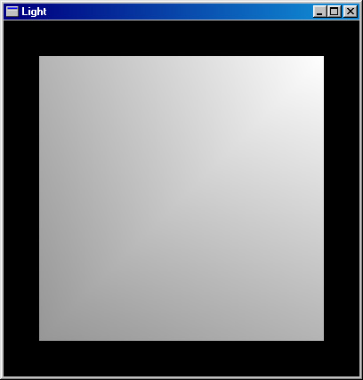
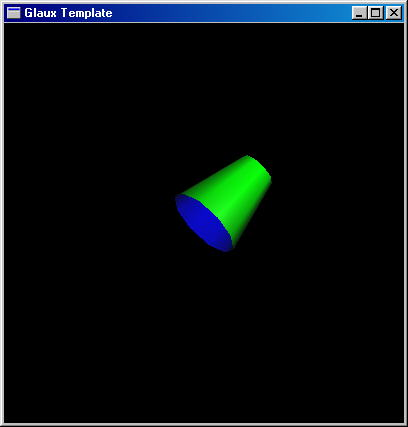
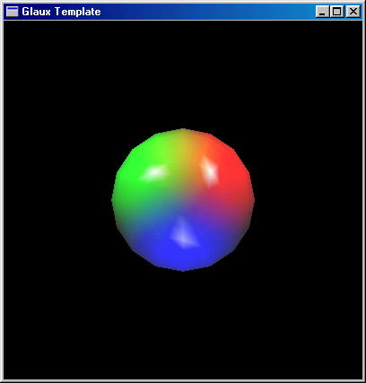

|
Chapter 6
Освещение и все что с ним связано
6.1 Общие понятия
Создавать объекты и накладывать на них текcтуры вы научились. Осталась последняя
из основных тем - это освещение объектов. Освоив освещение, вы сможете создавать
полноценные трехмерные сцены. Освещение любого объекта зависит от двух факторов.
Первый - это материал, из которого сделан объект. Второй - это свет, которым
он освещен. В этой главе мы подробно рассмотрим все особенности OpenGL,
касающиеся освещения объектов.
6.2 Модель освещения
По умолчанию освещение отключено. Включается оно командой
glEnable(GL_LIGHTING). В базовом шаблоне освещение я включил, потому что
без освещения работать практически невозможно. Сфера всегда будет показываться
как круг, а конус - как круг или треугольник. Если монотонное тело у вас равномерно
освещено, то вы не можете увидеть его рельеф. Поэтому нам нужно использовать
источники света. Сначала рассмотрим функцию, которая устанавливает базовые
настройки. Когда вы разрешили освещение, то вы можете уже устанавливать фоновую
освещенность. По умолчанию, значение фоновой освещенности равно (0.2, 0.2,
0.2, 1). Создайте новый проект, скопируйте туда шаблонный файл и отключите
освещение. Вы с трудом сможете различить сферу на экране. С помощью функции glLightModel вы можете установить фоновое
освещение. Если вы повысите его до (1,1,1,1), т.е. до максимума, то включать
источники света вам не понадобится. Вы их действия просто не заметите,
т.к. объект уже максимально освещен. И получится, что вы как бы отключили
освещение. В общем, добавьте в main вызов следующей функции:
float ambient[4] = {0.5, 0.5, 0.5, 1};
...
glLightModelfv(GL_LIGHT_MODEL_AMBIENT, ambient);
Попробуйте изменить параметры и посмотрите на результат. Нулевую лампу (glEnable(GL_LIGHT0))
лучше отключить.

Исходный файл смотрите здесь.
Исполняемый файл здесь.
6.3 Материал
Материал может рассеивать, отражать и излучать свет. Свойства материала
устанавливаются при помощи функции
glMaterialfv(GLenum face, GLenum pname, GLtype* params)
Первый параметр определяет грань, для которой устанавливаются свойства. Он
может принимать одно из следующих значений:
GL_BACK задняя грань
GL_FONT передняя грань
GL_FRONT_AND_BACK обе грани
Второй парметр функции glMaterialfv определяет свойство материала, которое
будет установлено, и может принимать следующие значения.
GL_AMBIENT рассеянный свет
GL_DIFFUSE тоже рассеянный свет, пояснения смотри ниже
GL_SPECULAR отраженный свет
GL_EMISSION излучаемый свет
GL_SHININESS степень отраженного света
GL_AMBIENT_AND_DIFFUSE оба рассеянных света
Ambient и diffuse переводятся на русский как "рассеянный". Разница между
ними не очень понятна. Я использую только GL_DIFFUSE. Третий параметр определяет
цвет соответствующего света, кроме случая GL_SHININESS. Цвет задается в виде
массива из четырех элементов - RGBA. В случае GL_SHININESS params указывает
на число типа float, которое должно быть в диапазоне от 0 до 128. Я написал
простенький пример с цилиндром и раскрасил его грани в разные цвета. Вам
надо всего лишь модифицировать функцию display.
void CALLBACK display(void)
{
GLUquadricObj *quadObj;
GLfloat front_color[] = {0,1,0,1};
GLfloat back_color[] = {0,0,1,1};
quadObj = gluNewQuadric();
glClear( GL_COLOR_BUFFER_BIT | GL_DEPTH_BUFFER_BIT );
glMaterialfv(GL_FRONT, GL_DIFFUSE, front_color);
glMaterialfv(GL_BACK, GL_DIFFUSE, back_color);
glPushMatrix();
glRotated(110, -1,1,0);
gluCylinder(quadObj, 1, 0.5, 2, 10, 10);
glPopMatrix();
gluDeleteQuadric(quadObj);
auxSwapBuffers();
}
И вы должны разрешить режим освещенности для двух граней. По умолчанию он
запрещен. Добавьте в функцию main следующую строчку.
glLightModeli(GL_LIGHT_MODEL_TWO_SIDE, GL_TRUE);

Исходный файл смотрите здесь.
Исполняемый файл здесь.
6.4 Лампы и их свойства
Все параметры лампы задаются с помощью функции glLight, которая имеет
следующий прототип:
void glLight[if][v](
GLenum light,
GLenum pname,
GLfloat param)
Первый аргумент определяет номер лампы. Его можно задавать двумя способами.
Первый - явно указать GL_LIHGTi, где GL_LIGHTi предопрелено в файле gl.h
следующим образом:
/* LightName */
#define GL_LIGHT0 0x4000
#define GL_LIGHT1 0x4001
#define GL_LIGHT2 0x4002
#define GL_LIGHT3 0x4003
#define GL_LIGHT4 0x4004
#define GL_LIGHT5 0x4005
#define GL_LIGHT6 0x4006
#define GL_LIGHT7 0x4007
Второй способ - GL_LIGHT0 + i, где i номер лампы. Такой способ используется,
когда вам надо в цикле изменять параметры ламп. Второй аргумент определяет
имя параметра, а третий его значение. Я здесь не буду перечислять всевозможные
параметры и их допустимые значения, для этого есть справочник и MSDN. Я покажу
и прокомментирую лишь небольшой пример, использующий три лампы. Для начала,
давайте разберем шаблонный пример. С помощью следующих функций разрешаем
освещение и включаем нулевую лампу.
glEnable(GL_LIGHTING);
glEnable(GL_LIGHT0);
Массивы pos и dir содержат координаты местоположения лампы и направления,
куда она светит. Массив dir содержит три координаты - x,y,z. Массив pos
- четыре, назначение четвертого мне не очень ясно. Если его значение отличается
от нуля, то изображение вполне логичное получается. Если же он ноль, то получается что-то
непотребное.
glLightfv(GL_LIGHT0, GL_POSITION, pos);
glLightfv(GL_LIGHT0, GL_SPOT_DIRECTION, dir);
Создайте
новый проект с именем lamps. Скопируйте шаблонный файл glaux.c.
Отредактируйте функцию main:
void main()
{
float pos[4] = {3,3,3,1};
float color[4] = {1,1,1,1};
float sp[4] = {1,1,1,1};
float mat_specular[] = {1,1,1,1};
auxInitPosition( 50, 10, 400, 400);
auxInitDisplayMode( AUX_RGB | AUX_DEPTH | AUX_DOUBLE );
auxInitWindow( "Glaux Template" );
auxIdleFunc(display);
auxReshapeFunc(resize);
glEnable(GL_DEPTH_TEST);
glEnable(GL_COLOR_MATERIAL);
glEnable(GL_LIGHTING);
glEnable(GL_LIGHT3);
glEnable(GL_LIGHT5);
glEnable(GL_LIGHT6);
glLightfv(GL_LIGHT3, GL_SPECULAR, sp);
glLightfv(GL_LIGHT5, GL_SPECULAR, sp);
glLightfv(GL_LIGHT6, GL_SPECULAR, sp);
color[1]=color[2]=0;
glLightfv(GL_LIGHT3, GL_DIFFUSE, color);
color[0]=0;
color[1]=1;
glLightfv(GL_LIGHT5, GL_DIFFUSE, color);
color[1]=0;
color[2]=1;
glLightfv(GL_LIGHT6, GL_DIFFUSE, color);
glLightfv(GL_LIGHT3, GL_POSITION, pos);
pos[0] = -3;
glLightfv(GL_LIGHT5, GL_POSITION, pos);
pos[0]=0;pos[1]=-3;
glLightfv(GL_LIGHT6, GL_POSITION, pos);
glMaterialfv(GL_FRONT, GL_SPECULAR, mat_specular);
glMaterialf(GL_FRONT, GL_SHININESS, 128.0);
auxMainLoop(display);
}
Здесь надо сделать пояснения для вызовов функции glLight с параметрами
GL_DIFFUSE и GL_SPECULAR. GL_DIFFUSE - определяет цвет света источника.
В данном примере у нас три лампы - с красным источником света, с зеленым
и с синим. GL_SPECULAR определяет отраженный свет, см. предыдущий пункт.
Теперь измените функциb display:
glColor3d(1,1,1);
auxSolidSphere(2);

Исходный файл смотрите здесь.
Исполняемый файл здесь.
|